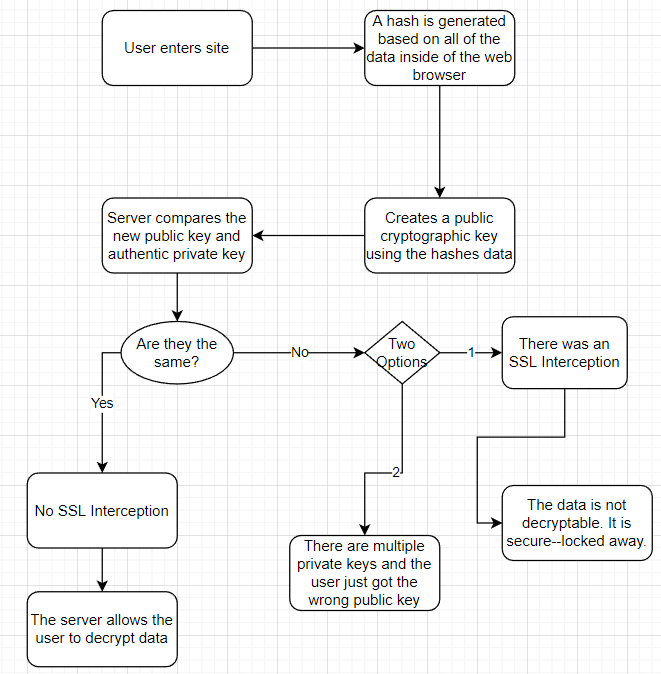

Digital Fingerprint Oliver Hankins Connections on the internet have greatly changed throughout the years. Firstly when the internet was just starting out and the world was just curious about what was going on, people utilized an HTTP connection which allowed people to not only connect, but also traffic everything at the same time. This however took its toll and eventually needed a solution–so we implemented the S in HTTPS which stood for Secure. The two primary purposes of a secure HTTPS connection are to authenticate and encrypt a website while blocking out all third parties. So… A person could “privately” utilize the internet. As the internet kept on developing, we arrived at HTTPS Proxy Appliances, basically just a way to better the users’ security and privacy while viewing the website. These Proxy Appliances are known as SSL or TLS (“Secure Sockets Layer” and “Transport Layer Security”). They create a secured connection that sends data back and forth through a secure passthrough between connections with any HTTPS/SSL/TLS connection. One issue however with this method of security is that the connection is able to be intercepted by third party sources. MITM or Man in The Middle is when a third party intercepts the connection between two parties in allowing for the MITM to stalk or modify data that is moving between connections. This is very risky because MITM attacks enable a third party to steal login information or personal credentials, eavesdropping on communications, or even changing data. There are also more globally accepted ways of intercepting certain web browsers. Examples of this include schools, the government, ISP’s, etc…This is possible because of the trusted higher up positions that these examples hold on the websites. The positions they hold have special permissions, allowing them to intercept anything because of their trusted status in the website not requiring certain circumstances in order to find data in a web browser. So, the CA or Certificate Authority was created. CA is a trusted source that gives SSL connections certificates based on whether the Certificate Authority believes that the SSL connection has proved itself as trustworthy and a good web browser. The CA basically just shows people what sites should and should not be trusted at first glance. And on top of that, we created a hash for extra security. A hash is a sort of cryptographic key that utilizes mathematical equations in order to take in every single bit of data and put out a public key that everyone can view. Some qualities of a good hash include: The hash is fully determined by the data being hashed, the hash takes into account all of the data, the hash fully distributes data across the entire set of possible hash values, and the hash creates different values for very similar things. SSL interceptions although they can not be prevented once they occur, they are very avoidable because they can be detected by using public and private cryptographic keys that only have a single match. This is possible because of hashing, because whenever anything is changed anywhere, a hash creates a new public key, allowing for a person to figure out whether or not their site is authentic and secure. One issue that comes with this is when a large company with a big web presence has multiple different private keys in order to easier get and manage their certificates while not declining in security. This is called a False-Negative Mismatch, where a person could get a different key each time even if they are all valid keys because the website could have multiple private keys–making the person think that the web browser is not secure. On the contrary, a False-Positive is an alert that incorrectly shows a lack of security–the opposite of a False-Negative Mismatch.  SparkNotes. (n.d.). Sparknotes. Retrieved August 25, 2022, fromsparknotes.com/cs/searching Steve Gibson, G. I. B. S. O. N. R. E. S. E. A. R. C. H. C. O. R. P. O. R. A. T. I. O. N. (n.d.). GRC : SSL TLS HTTPS web server certificate fingerprints . GRC | SSL TLS HTTPS Web Server Certificate Fingerprints . Retrieved August 25, 2022, fromhttps://www.grc.com/fingerprints.htm#top 3 reasons why everyone needs a digital portfolio. bulb. (2021, June 8). Retrieved August 25, 2022,https://my.bulbapp.com/college-and-career-readiness/3-reasons-why-everyone-needs-a-digital-portfolio/ |